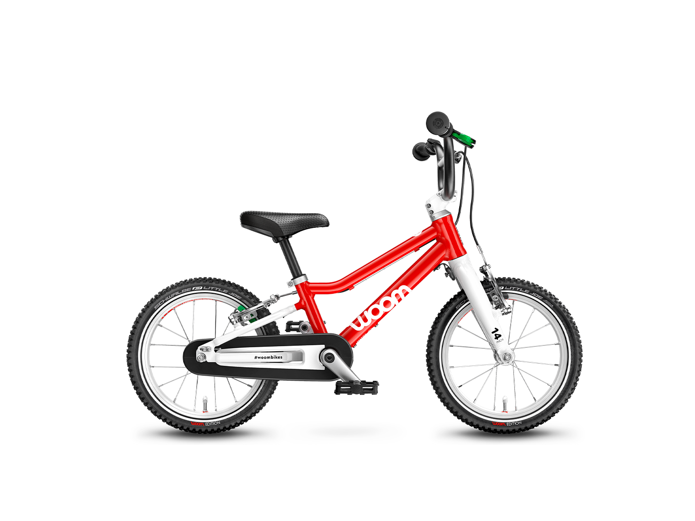
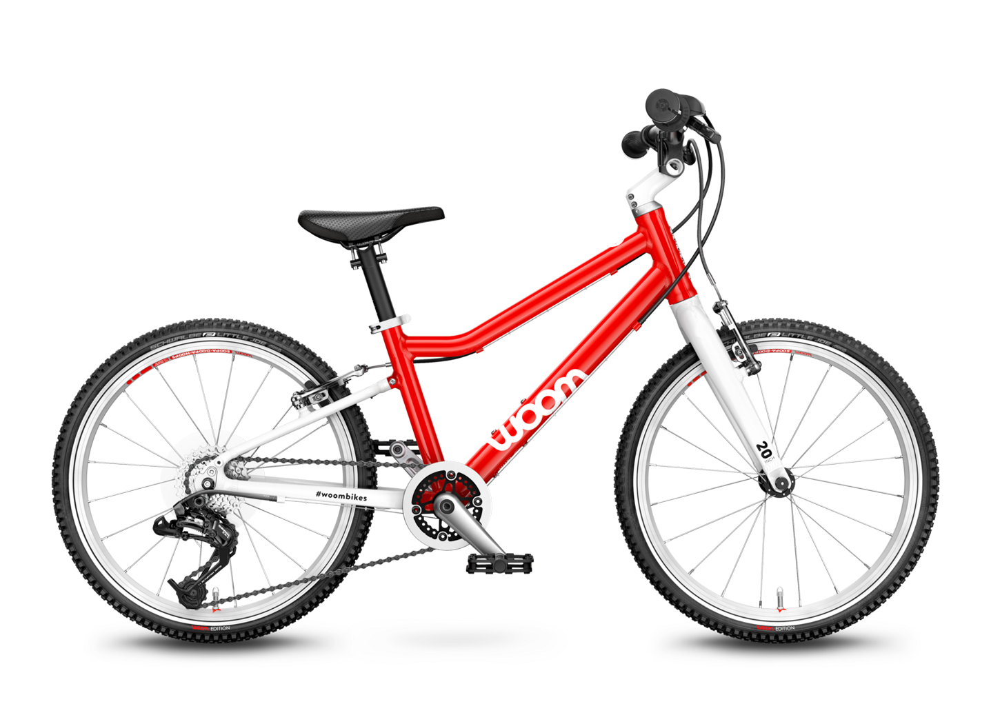

Kids Bikes
Check out our selection of safe and fun bikes for kids of all ages.

Woom 2
The Woom 2 is a perfect for learning balancing & pedalling skills. It has 14-inch wheels and weighs 5.5 kilograms.

Woom 4
The Woom 4 has an 8-speed gearing with an easy-to-operate twist shifter. It has 20-inch wheels and weighs 8.1 kilograms.